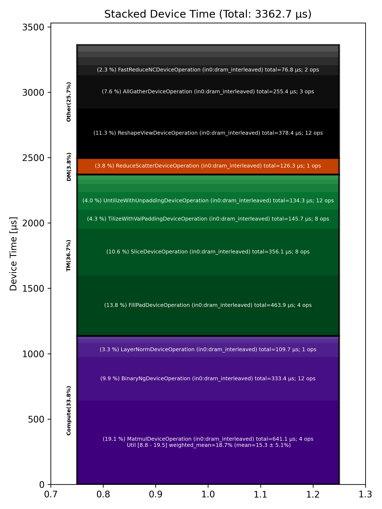

🚀 Performance Report 🚀 ======================== ID Total % Bound OP Code Device Device Time Op-to-Op Gap Cores DRAM DRAM % FLOPs FLOPs % Math Fidelity --------------------------------------------------------------------------------------------------------------------------------------------------------------------------- 25 0.0 % LayerNormDeviceOperation 12 110 μs 16 BF16, BF16 => BF16 60 0.0 % ReshapeViewDeviceOperation 18 29 μs 134 μs 72 BF16 => BF16 89 0.0 % UntilizeWithUnpaddingDeviceOperation 12 9 μs 68 μs 45 BF16 => BF16 122 0.0 % RepeatDeviceOperation 16 9 μs 161 μs 72 BF16 => BF16 159 0.0 % TilizeWithValPaddingDeviceOperation 10 39 μs 88 μs 45 BF16 => BF16 174 0.0 % DRAM MatmulDeviceOperation 32 x 2880 x 5760 6 358 μs 424 μs 60 191 GB/s 66.5 % 11.9 TFLOPs 19.2 % HiFi4 BF16 x BFP8 => BF16 212 0.0 % BinaryNgDeviceOperation 22 22 μs 1 μs 72 BF16, BF16 => BF16 253 0.0 % UntilizeWithUnpaddingDeviceOperation 19 32 μs 1 μs 60 BF16 => BF16 276 0.0 % SliceDeviceOperation 22 155 μs 186 μs 64 BF16 => BF16 292 0.0 % TilizeWithValPaddingDeviceOperation 26 39 μs 86 μs 45 BF16 => BF16 328 0.0 % UnaryDeviceOperation 1 8 μs 64 μs 72 BF16 => BF16 358 0.0 % BinaryNgDeviceOperation 3 15 μs 205 μs 72 BF16, BF16 => BF16 415 0.0 % UntilizeWithUnpaddingDeviceOperation 10 32 μs 232 μs 60 BF16 => BF16 445 0.0 % SliceDeviceOperation 19 155 μs 76 μs 64 BF16 => BF16 452 0.0 % TilizeWithValPaddingDeviceOperation 26 39 μs 1 μs 45 BF16 => BF16 505 0.0 % UnaryDeviceOperation 12 9 μs 55 μs 72 BF16 => BF16 523 0.0 % BinaryNgDeviceOperation 29 16 μs 173 μs 72 BF16, BF16 => BF16 561 0.0 % UnaryDeviceOperation 4 11 μs 229 μs 72 BF16 => BF16 604 0.0 % BinaryNgDeviceOperation 18 12 μs 98 μs 72 BF16, BF16 => BF16 640 0.0 % BinaryNgDeviceOperation 9 12 μs 160 μs 72 BF16, BF16 => BF16 672 0.0 % SLOW MatmulDeviceOperation 32 x 2880 x 2880 19 235 μs 503 μs 45 147 GB/s 51.1 % 9.0 TFLOPs 19.5 % HiFi4 BF16 x BFP8 => BF16 686 0.0 % BinaryNgDeviceOperation 7 11 μs 1 μs 72 BF16, BF16 => BF16 706 0.0 % ReshapeViewDeviceOperation 24 160 μs 50 μs 72 BF16 => BF16 739 0.0 % TypecastDeviceOperation 25 57 μs 138 μs 72 BF16 => FP32 790 0.0 % ReshapeViewDeviceOperation 15 47 μs 54 μs 72 FP32 => FP32 810 0.0 % SLOW MatmulDeviceOperation 32 x 2880 x 32 13 33 μs 337 μs 1 14 GB/s 4.9 % 0.2 TFLOPs 8.8 % HiFi2 FP32 x BFP8 => FP32 862 0.0 % TypecastDeviceOperation 11 2 μs 98 μs 1 FP32 => BF16 882 0.0 % FillPadDeviceOperation 20 3 μs 313 μs 1 BF16 => BF16 921 0.0 % PadDeviceOperation 12 35 μs 98 μs 2 BF16 => BF16 941 0.0 % FillPadDeviceOperation 31 5 μs 113 μs 1 BF16 => BF16 979 0.0 % TopKDeviceOperation 21 44 μs 96 μs 1 BF16 => BF16 998 0.0 % SliceDeviceOperation 3 1 μs 117 μs 1 BF16 => BF16 1037 0.0 % SliceDeviceOperation 31 1 μs 96 μs 1 UINT16 => UINT16 1070 0.0 % TypecastDeviceOperation 7 2 μs 170 μs 1 UINT16 => INT32 1116 0.0 % ReshapeViewDeviceOperation 18 5 μs 96 μs 16 INT32 => INT32 1122 0.0 % UntilizeWithUnpaddingDeviceOperation 24 3 μs 167 μs 16 INT32 => INT32 1175 0.0 % UntilizeWithUnpaddingDeviceOperation 14 3 μs 243 μs 16 INT32 => INT32 1194 0.0 % PermuteDeviceOperation 28 3 μs 82 μs 16 INT32 => INT32 1224 0.0 % PermuteDeviceOperation 1 3 μs 167 μs 16 INT32 => INT32 1279 0.0 % ConcatDeviceOperation 10 2 μs 80 μs 32 INT32, INT32 => INT32 1313 0.0 % PermuteDeviceOperation 8 3 μs 175 μs 16 INT32 => INT32 1325 0.0 % TilizeWithValPaddingDeviceOperation 31 7 μs 91 μs 16 INT32 => INT32 1347 0.0 % SoftmaxDeviceOperation 25 24 μs 193 μs 72 BF16 => BF16 1393 0.0 % AllGatherDeviceOperation 0 53 μs 557 μs 24 INT32 => INT32 1410 0.0 % AllBroadcastDeviceOperation 8 39 μs 210 μs 4 BF16 => BF16 1464 0.0 % UntilizeWithUnpaddingDeviceOperation 13 7 μs 130 μs 1 BF16 => BF16 1488 0.0 % UntilizeWithUnpaddingDeviceOperation 5 7 μs 155 μs 1 BF16 => BF16 1523 0.0 % UntilizeWithUnpaddingDeviceOperation 21 7 μs 72 μs 1 BF16 => BF16 1550 0.0 % UntilizeWithUnpaddingDeviceOperation 7 7 μs 166 μs 1 BF16 => BF16 1599 0.0 % ConcatDeviceOperation 10 2 μs 87 μs 64 BF16, BF16 => BF16 1621 0.0 % TilizeWithValPaddingDeviceOperation 23 5 μs 187 μs 2 BF16 => BF16 1663 0.0 % ReshapeViewDeviceOperation 10 10 μs 119 μs 8 INT32 => INT32 1678 0.0 % SliceDeviceOperation 7 2 μs 143 μs 8 INT32 => INT32 1723 0.0 % UntilizeWithUnpaddingDeviceOperation 17 14 μs 265 μs 8 INT32 => INT32 1745 0.0 % SliceDeviceOperation 4 4 μs 279 μs 72 INT32 => INT32 1781 0.0 % TilizeWithValPaddingDeviceOperation 23 8 μs 310 μs 8 INT32 => INT32 1801 0.0 % BinaryNgDeviceOperation 0 11 μs 111 μs 72 INT32, INT32 => INT32 1827 0.0 % BinaryNgDeviceOperation 25 3 μs 146 μs 72 INT32, INT32 => INT32 1882 0.0 % ReshapeViewDeviceOperation 16 7 μs 238 μs 8 INT32 => INT32 1905 0.0 % ReshapeViewDeviceOperation 4 3 μs 240 μs 8 BF16 => BF16 1949 0.0 % UntilizeWithUnpaddingDeviceOperation 19 7 μs 88 μs 1 INT32 => INT32 1976 0.0 % UntilizeWithUnpaddingDeviceOperation 13 6 μs 158 μs 1 BF16 => BF16 1993 0.0 % ScatterDeviceOperation 0 60 μs 96 μs 1 BF16, INT32 => BF16 2022 0.0 % TilizeWithValPaddingDeviceOperation 3 5 μs 118 μs 64 BF16 => BF16 2067 0.0 % ReshapeViewDeviceOperation 21 23 μs 230 μs 2 BF16 => BF16 2088 0.0 % UntilizeDeviceOperation 1 4 μs 74 μs 2 BF16 => BF16 2117 0.0 % MeshPartitionDeviceOperation 28 2 μs 484 μs 16 BF16 => BF16 2151 0.0 % MeshPartitionDeviceOperation 10 2 μs 457 μs 16 BF16 => BF16 2193 0.0 % TilizeWithValPaddingDeviceOperation 4 4 μs 101 μs 1 BF16 => BF16 2221 0.0 % TransposeDeviceOperation 31 2 μs 200 μs 72 BF16 => BF16 2265 0.0 % ReshapeViewDeviceOperation 12 8 μs 255 μs 64 BF16 => BF16 2284 0.0 % BinaryNgDeviceOperation 30 130 μs 114 μs 72 BF16, BF16 => BF16 2308 0.0 % FillPadDeviceOperation 26 301 μs 35 μs 64 BF16 => BF16 2347 0.0 % FastReduceNCDeviceOperation 29 67 μs 1 μs 72 BF16 => BF16 2387 0.0 % SliceDeviceOperation 21 35 μs 1 μs 72 BF16 => BF16 2417 0.0 % ReduceScatterDeviceOperation 0 126 μs 454 μs 24 BF16 => BF16 2449 0.0 % AllGatherDeviceOperation 0 111 μs 301 μs 40 BF16 => BF16 2496 0.0 % BinaryNgDeviceOperation 9 49 μs 16 μs 72 BF16, BF16 => BF16 2508 0.0 % ReshapeViewDeviceOperation 30 28 μs 133 μs 72 BF16 => BF16 2546 0.0 % PermuteDeviceOperation 20 22 μs 183 μs 72 BF16 => BF16 2574 0.0 % ReshapeViewDeviceOperation 7 14 μs 213 μs 16 BF16 => BF16 2597 0.0 % SLOW MatmulDeviceOperation 32 x 512 x 2880 28 15 μs 331 μs 45 113 GB/s 39.2 % 6.3 TFLOPs 13.6 % HiFi4 BF16 x BFP8 => BF16 2641 99.6 % AllGatherDeviceOperation 0 91 μs 4,393,821 μs 24 BF16 => BF16 2670 0.0 % FillPadDeviceOperation 7 155 μs 209 μs 8 BF16 => BF16 2697 0.0 % FastReduceNCDeviceOperation 0 10 μs 1 μs 72 BF16 => BF16 2737 0.0 % SliceDeviceOperation 4 3 μs 95 μs 72 BF16 => BF16 2756 0.0 % BinaryNgDeviceOperation 26 5 μs 145 μs 72 BF16, BF16 => BF16 2789 0.0 % ReshapeViewDeviceOperation 27 45 μs 466 μs 72 BF16 => BF16 2835 0.0 % BinaryNgDeviceOperation 21 48 μs 412 μs 72 BF16, BF16 => BF16 --------------------------------------------------------------------------------------------------------------------------------------------------------------------------- 100.0 % 89 device ops, 0 host ops, 0 signposts 3,363 μs 4,408,526 μs 📊 Stacked report 📊 ==================== Total % Op Code Device Time Sum Op Count Op Category Min FLOPs Max FLOPs Mean FLOPs Std FLOPs Weighted Mean FLOPs ------------------------------------------------------------------------------------------------------------------------------------------------------------------------------ 19.06 % MatmulDeviceOperation (in0:dram_interleaved) 641.06 μs 4 Compute 8.78 % 19.51 % 15.29 % 5.12 % 18.67 % 13.80 % FillPadDeviceOperation (in0:dram_interleaved) 463.92 μs 4 TM 11.25 % ReshapeViewDeviceOperation (in0:dram_interleaved) 378.43 μs 12 Other 10.59 % SliceDeviceOperation (in0:dram_interleaved) 356.09 μs 8 TM 9.91 % BinaryNgDeviceOperation (in0:dram_interleaved) 333.41 μs 12 Compute 7.59 % AllGatherDeviceOperation (in0:dram_interleaved) 255.39 μs 3 Other 4.33 % TilizeWithValPaddingDeviceOperation (in0:dram_interleaved) 145.70 μs 8 TM 3.99 % UntilizeWithUnpaddingDeviceOperation (in0:dram_interleaved) 134.34 μs 12 TM 3.76 % ReduceScatterDeviceOperation (in0:dram_interleaved) 126.33 μs 1 DM 3.26 % LayerNormDeviceOperation (in0:dram_interleaved) 109.67 μs 1 Compute 2.28 % FastReduceNCDeviceOperation (in0:dram_interleaved) 76.81 μs 2 Other 1.81 % TypecastDeviceOperation (in0:dram_interleaved) 60.83 μs 3 TM 1.77 % ScatterDeviceOperation (in0:dram_interleaved) 59.60 μs 1 Other 1.31 % TopKDeviceOperation (in0:dram_interleaved) 44.07 μs 1 Other 1.15 % AllBroadcastDeviceOperation (in0:dram_interleaved) 38.77 μs 1 Other 1.04 % PadDeviceOperation (in0:dram_interleaved) 34.99 μs 1 TM 0.90 % PermuteDeviceOperation (in0:dram_interleaved) 30.16 μs 4 TM 0.84 % UnaryDeviceOperation (in0:dram_interleaved) 28.15 μs 3 Compute 0.70 % SoftmaxDeviceOperation (in0:dram_interleaved) 23.69 μs 1 Compute 0.26 % RepeatDeviceOperation (in0:dram_interleaved) 8.81 μs 1 Other 0.12 % UntilizeDeviceOperation (in0:dram_interleaved) 3.87 μs 1 TM 0.11 % MeshPartitionDeviceOperation (in0:dram_interleaved) 3.56 μs 2 Other 0.10 % ConcatDeviceOperation (in0:dram_interleaved) 3.25 μs 2 TM 0.05 % TransposeDeviceOperation (in0:dram_interleaved) 1.81 μs 1 TM ------------------------------------------------------------------------------------------------------------------------------------------------------------------------------
